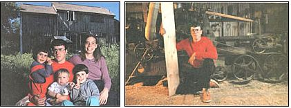
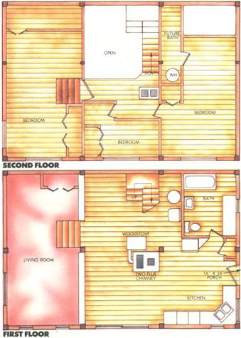
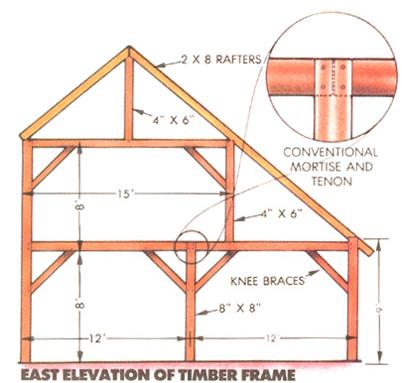
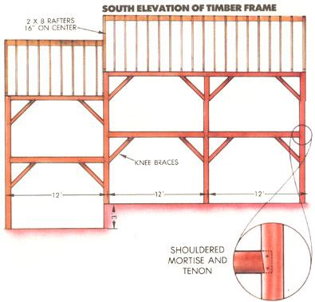
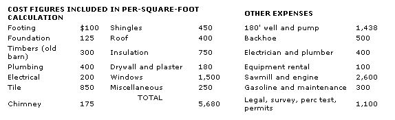

Using local materials, these owner-builders were able to build their own timber frame home for only $3.55 per square foot.
After taking a break for our special 100th issue, we're now ready to pick up again with reports on the five Low-Cost Home-Building Contest winners we announced in issue 98. Thus far, you've seen the Kennedys' ambitious, $11.85-per-square-foot, passive solar saltbox and the Marquardts' cozy, $5.60-per-square-foot log cabin - a pretty broad range of approaches and costs. This time, though, we're going to show you the lowest-cost code-certified entry we received: Richard and Susan Mason's $3.55-per-square-foot post and beam home, located in the central Massachusetts countryside.
The largest factor in the Masons' extraordinarily low per-square-foot cost is their source of construction lumber. They cut and milled much of the framing lumber, most of the timbers, and all of the flooring, paneling, and siding from pines and oaks on their own property. Other timbers were salvaged from an old barn they purchased for $300. To form the necessary posts; beams, and planks, they purchased a portable sawmill for $2,600. Including its cost in the materials raises the per-square-foot cost to only $5.36.
Working with one's own timber requires a considerable amount of planning. Richard and Susan cut the boards for all the flooring (save the kitchen and bathroom, which are Italian ceramic tile on a plywood subfloor) two years before it was to be used, so that it would be thoroughly seasoned. Many are the horror stories told by owner-builders who've put down flooring before it was fully dried, only to have it warp, split, and draw away from its neighbors. Equally important is a place for proper storage during seasoning: For the Masons, it was a barn on their property. Boards were sawed there and properly "stickered" (stacked).
Rick set their home on a 1' footing on bedrock granite, following up to sill level with a standard block-and-mortar foundation. To hug the contour of the sloping lot, Rick dropped the bottom third of the house 3 feet, in order to form a split level.
The building's frame consists of 4 bents, the timber framer's term for a section of a post-and-beam building's frame that's assembled on the ground and then raised into position. In the Masons' case, each bent is a full structural cross section along the 24' dimension of their home. The main posts on the bents are 8" X 8", as are the main beams forming the second-story floor. From there, parts of the second story are framed in 6" X 4" timbers.
Each bent was lifted with the aid of a tractor and, according to Susan, "a lot of luck." From there, 6" X 6", 6" X 8", and 8" X 8" beams (with knee braces) linked the bents together. Floor joists are 4" X 4" on 18" centers, and more 4" X 4" supports run between the main posts to provide nailers for paneling and siding and to support insulation and windows.
One of the beauties of a timber frame house is that much of the work can be done in advance, since the posts and beams are usually cut and jointed (with mortises, tenons, and locking pegs) before any framing begins. Thus the skeleton of a post-and-beam house can be raised in a day by an energetic crew.
Once the roof - conventional 2 X 8 rafters on 16" centers covered by 1" sheathing boards and fiberglass-asphalt shingles - made the structure more or less rainproof, Richard and Susan began working from the inside of their house outward. Their first goal was to get the 1" shiplap pine and oak paneling up, since they intended to set this lumber green and allow it to settle into place.
With that done, they added 3-1/2" fiberglass insulation, laid horizontally on the 4" X 4"s, topped with 1-1/2" extruded polystyrene foam, to yield a wall R-value of about 25. (The roof got 6" fiberglass and the same rigid boards for more than R-32.) On the outside, they used their own board-and-batten siding, though they'd someday like to replace this with planed clapboards.
At this point, they consider all the windows other than the sliding glass door to be temporary. Their plan is to replace the upstairs windows with Andersen casement units as the money becomes available. Downstairs, there are several 3' X 6' fixed, insulated windows for which they still haven't settled on replacements. Likewise, the finishing of the living room/den awaits available funds and just the right idea. Someday they'll put in the fixtures for the second bathroom. As anyone who's been, or even known, an owner-builder is aware, erecting one's own house tends to be a longterm commitment.
The only outside labor the Masons used was $500 worth of backhoe work and that which was required by building code: $400 for a certified electrician to do outside wiring and for a registered plumber to connect the septic system and install rough plumbing. Despite going it almost completely on their own (with three small children), they managed to move in on January 28, 1983, only 21 months after breaking ground. In that time, they spent a total of only $13,000 on the project!
All their space heat comes from a woodstove that Rick designed and built, the exhaust for which feeds into a two-flue chimney faced with fieldstone from their yard. A coil plumbed into the woodburner teams up with a passive solar collector (also designed and built by Rick) to supply all their hot water. No pumps are required for these devices; they thermosiphon to the storage tank on the second floor.
There's still work to be done, and what's done hasn't always come easily. (Rick was, for example, injured in a chain saw accident in the fall of 1985, right when their third child was due, which hasn't moved the schedule forward any.) At any rate, we think you'll agree that what the Masons have accomplished so far is truly amazing.
|
 (PHOTOGRAPHS BY BROWNIE HARRIS) It takes ingenuity and persistence for a young family with three small children to build their own home. Right: One way that the Masons economized was by cutting most of their lumber with a portable saw mill. |
 Shouldered mortise and tenon joints are about 1/8"" wide for each inch of post thickness ? or 1"" on the Masons' 8"" posts. |
 Space heat is provided by a woodstove that Rick designed and built. |
|
 |
 |
|